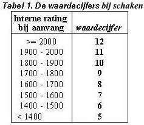
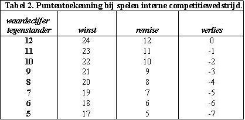
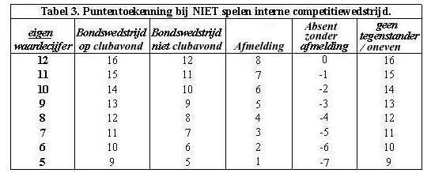
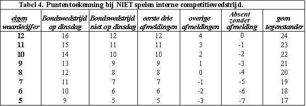

Het Alkmaarse Systeem
Inleiding
Het Alkmaarse Systeem is een competitiesysteem, bedoeld voor schaak- en damclubs. Het is een zogenaamd laddersysteem, waarbij alle spelers in één grote groep spelen (dus maximaal één speler heeft geen tegenstander). De puntentoekenning is, zowel bij winst, remise als bij verlies, gerelateerd aan de rating van de tegenstander.
Het Alkmaarse Systeem geeft een eindranglijst die speelsterkteverhoudingen beter weergeeft dan het Zwitserse Systeem en is eenvoudiger dan het Systeem Keizer.
Het systeem heeft zijn bruikbaarheid bewezen bij De Waagtoren, de grootste Alkmaarse schaakclub, waar het sinds 2010 voor de interne competitie wordt gebruikt.
Waardecijfers

Bij aanvang van de competitie krijgt elke speler het waardecijfer toegewezen dat correspondeert met zijn rating 1.).
Als dit gebeurd is speelt de rating zelf, in principe geen rol meer in het eigenlijke systeem. Het waardecijfer verandert niet tijdens het speelseizoen. Ook spelers die later toetreden krijgen op grond van hun rating een waardecijfer. 2.)
Het aantal spelers met een gelijk waardecijfer kan dus variëren.
1.) Bij schaakclubs: Men vindt het waardecijfer van een speler door de twee laatste cijfers van zijn rating weg te laten en het getal dat overblijft met 8 te verminderen, met dien verstande dat het hoogste waardecijfer 12 bedraagt en het laagste 5. Zie tabel 1.
Bij damclubs: Men vindt het waardecijfer van een speler door de twee laatste cijfers van zijn rating weg te laten, met dien verstande dat het hoogste waardecijfer 12 bedraagt en het laagste 5.
2.) Spelers die geen rating hebben krijgen als regel het laagste waardecijfer, tenzij de wedstrijdleider redenen heeft ze een hogere rating te geven.
Startpunten en puntentoekenning
Elke speler start met 300 punten. (Op zich een willekeurige keuze, maar zo wordt ook bij extreme daling de score altijd met drie cijfers geschreven.)
De puntentoekenning bij de interne partijen is als volgt:
speelt iemand remise, dan krijgt hij het waardecijfer van zijn tegenstander aan punten er bij,
wint hij, dan krijgt hij het waardecijfer van zijn tegenstander plus 12 punten,
verliest hij, dan krijgt hij het waardecijfer van zijn tegenstander min 12 punten, zie tabel 2.

De getallen in tabel 2 vormen de kern van het systeem. Zolang hieraan wordt voldaan mag men spreken van het Alkmaarse Systeem. Buiten deze kern is het systeem flexibel en is er veel vrijheid voor de club om zelf een aantal zaken naar eigen voorkeur in te vullen.
De indeling
De indeling geschiedt in principe op dezelfde manier als bij andere laddersystemen: 1 tegen 2, 3 tegen 4 enz. En als spelers al tegen elkaar gespeeld hebben, wordt de eerst volgende beschikbare tegenstander genomen.
Als er een oneven aantal spelers is zal er een speler overblijven, deze speler is dan ‘oneven’ en krijgt een vergoeding in punten, gelijk aan zijn waardecijfer plus 4. Een speler kan slechts eenmaal per seizoen oneven zijn.
Het verdient aanbeveling het seizoen in drie periodes te verdelen; in elke periode kan men slechts één keer tegen dezelfde tegenstander spelen. Ook wordt aanbevolen dezelfde spelers pas opnieuw tegen elkaar in te delen als er ten minste drie speelronden zijn verstreken.
Het begin van de competitie
De ranglijst waarmee wordt begonnen wordt verkregen door de spelers op rating te sorteren.
In het begin van de competitie zullen er zich flinke schommelingen op de ranglijst voordoen, waarbij het zal voorkomen dat spelers met een groot verschil in speelsterkte aan elkaar worden gepaard. In de praktijk vindt sortering naar sterkte vrij spoedig plaats en geeft dit geen grote problemen; het kan zelfs als een voordeel worden gezien dat minder sterke spelers eens de kans krijgen tegen een sterke speler uit te komen.
Aantal ronden
In het ideale geval spelen alle deelnemers iedere clubavond voor de interne competitie. In dat geval kan men er van uit gaan dat bij een aantal ronden van ongeveer 1/3 van het aantal deelnemers (met een minimum van 20 ronden) een eindranglijst wordt verkregen die goed recht doet aan de gebleken krachtsverschillen. Toch doet men er goed aan bij meer dan 40 deelnemers minstens 30 ronden te spelen, daar het aantal werkelijk gespeelde interne partijen voor veel spelers dan niet veel hoger dan 20 zal zijn.
Vergoedingen
De praktijk is dat spelers soms op een clubavond geen interne partij kunnen spelen. In geval van ‘overmacht’ (oneven zijn of een verplichting voor de club hebben, zoals een bondswedstrijd moeten spelen) is het redelijk er van uit te gaan dat de speler de mogelijkheid wordt ontnomen om een winstpartij te spelen en hem derhalve een vergoeding te geven die boven het waardecijfer oftewel boven de gemiddelde kansverwachting van 50% ligt. (Als regel: waardecijfer plus 4.)
Bij afbericht wordt als regel een vergoeding gegeven die lager is dan de kansverwachting, bv. 4 punten minder dan het waardecijfer.
De hoogte van de vergoedingen wordt niet precies door het systeem voorgeschreven. Iedere vereniging kan hier zelf bepalen wat men redelijk vindt. In tabel 3 staat een overzicht van de vergoedingen die men als richtlijn kan hanteren.
Vergoedingen voor niet spelen zijn dus gerelateerd aan het eigen waardecijfer van de betreffende speler.

Spelers die later dan ronde 1 aan de competitie gaan deelnemen, krijgen voor elke niet-gespeelde ronde een puntenaantal gelijk aan hun waardecijfer min 4.
-------------------------------------------------------------------------
Tot zover de beschrijving van de belangrijkste principes van het Alkmaarse Systeem. Voor de meeste deelnemers is bovenstaande kennis ruim voldoende. Er volgen nog enkele opmerkingen en alternatieven:
Rating en waardecijfer
Welke rating wordt gebruikt voor de bepaling van de waardecijfers en voor de beginranglijst moet de club zelf bepalen. Het ligt voor de hand de officiële bondsrating te gebruiken, maar men kan ook kiezen voor de clubrating die de speler had na afloop van de vorige interne competitie. Ook een gemiddelde van die twee is mogelijk.
In het geval er bij een vereniging veel spelers zijn met hoge ratings (bij schakers bv. van 2000 tot 2400 en bij dammers van 1200 tot 1600), dan kan men de ratinggrenzen gewoon wat verleggen: kies een ratinggrens waarboven niet meer dan vijf à acht spelers zijn; die krijgen waardecijfer 12. De grens van waardecijfer 11 is dan niet 100 punten lager, maar bv. 120 of 140 punten lager, die van waardecijfer 10 is weer dat aantal punten lager enz.
Indeling eerste ronde
Voor de indeling van de eerste ronde kan men desgewenst een ander principe hanteren dan 1 tegen 2, 3 tegen 4 enz. Dit o.a. om te voorkomen dat de twee sterkste spelers direct al tegen elkaar moeten uitkomen. Hiervoor zijn meerdere varianten denkbaar. Een aardig alternatief is de volgende, bij De Waagtoren gebruikelijke, wijze van indelen:
Op de eerste speelavond worden de aanwezigen volgens rating ingedeeld in drie groepen, waarbij binnen elke groep van n spelers nummer 1 speelt tegen nummer ½n+1, nummer 2 tegen nummer ½n+2, enz.
Gedifferentieerde startpunten
In het begin van de competitie komen er flinke schommelingen op de ranglijst tot stand, waardoor spelers met een groot ratingverschil aan elkaar worden gepaard.
Als men dit zoveel mogelijk wil voorkomen, dan is het mogelijk met gedifferentieerde startpunten te beginnen; bv. spelers met waardecijfer 12: 300 punten, spelers met waardecijfer 11: 290 punten, spelers met waardecijfer 10: 280 punten enz.
Men kan dan een aantal ronden later, de spelers die minder dan 300 startpunten hadden het verschil er bij geven. Dit kan het beste geleidelijk gebeuren, bv.: ronde 5, spelers met waardecijfer 5, 10 punten er bij, ronde 6, spelers met waardecijfer 5 en 6, 10 punten erbij, ronde 7, spelers met waardecijfer 5, 6 en 7, 10 punten erbij, enz., totdat iedere deelnemer 300 startpunten heeft.
Bij een groter aantal deelnemers dan 80 is het waarschijnlijk aan te raden met gedifferentieerde startpunten te beginnen.
Alternatief bij bondswedstrijden
Een vereniging kan er ook voor kiezen om bij bondswedstrijden een vergoeding te geven afhankelijk van het resultaat. Men speelt dan voor zijn eigen waardecijfer (of voor het waardecijfer dat de tegenstander zou hebben als hij bij de club intern zou spelen.)
De voor- en nadelen van een vaste dan wel resultaatafhankelijke vergoeding zijn altijd punt van discussie en iedere vereniging moet hierin een keuze maken. De Waagtoren heeft gekozen voor vaste (resultaat onafhankelijke) vergoedingen.
Ook de vergoeding die wordt gegeven als een speler afbericht geeft op de clubavond omdat hij op een andere dag in de week een bondswedstrijd speelt is arbitrair en kan door de vereniging worden bepaald. Aanbevolen wordt om in dat geval het waardecijfer als vergoeding te geven, tenzij het beleid is om het resultaat van de partij bepalend te laten zijn.
Alternatief bij afmeldingen
Bij De Waagtoren is gekozen voor andere vergoedingen bij afbericht in de interne competitie. Zie tabel 4 voor een overzicht van alle vergoedingen bij niet intern spelen die bij De Waagtoren gelden.

Het Alkmaarse Systeem vergeleken met het Zwitsers systeem en met het Systeem Keizer
Het systeem kent overeenkomsten met het Zwitsers systeem en met het Systeem Keizer. De belangrijkste overeenkomst is de wijze van indelen en het spelen in één groep.
Het voordeel t.o.v. het Zwitserse systeem is dat er onderscheid wordt gemaakt naar sterkte, wat betreft de puntentoekenning. Hierdoor is de eindranglijst - vooral in het middensegment - veel meer in overeenstemming met de geleverde prestatie, dan bij het Zwitserse systeem. Het Zwitserse systeem is wel geschikt voor korte toernooien waarbij het er om gaat één of enkele winnaars bovenaan te krijgen.
Het voordeel t.o.v. het Systeem Keizer is dat het Alkmaarse Systeem veel eenvoudiger is wat betreft de puntentoekenning doordat de waardecijfers niet voortdurend veranderen en er ook geen herwaardering plaats vindt. Spelers kunnen in het Alkmaarse Systeem hun puntenaantal eenvoudig nagaan. Bovendien wordt in het Alkmaarse Systeem ook bij een verliespartij onderscheid gemaakt naar sterkte van de tegenstander en bij het systeem Keizer niet. Verder is in het Systeem Keizer het waardecijfer gekoppeld aan de plaats op de ranglijst, wat om verschillende redenen aanvechtbaar is.
De uitvoering van het systeem
Het systeem is in principe met de hand of in een spreadsheet door de wedstrijdleider uit te voeren, doch het maken van de indeling is een hele klus.
Het door Herman Nijhuis gemaakte programma Rokade, is zeer geschikt en verricht alle belangrijke taken voor de wedstrijdleider. Dit programma kent het Alkmaarse Systeem, het Systeem Keizer en het Zwitserse Systeem. Met dezelfde spelersgroep kan men meerdere competities spelen, bv. een grote interne competitie volgens het Alkmaarse Systeem en een snelschaakcompetitie volgens het Zwitserse Systeem.
Download Rokade, hét programma voor schaakclubs.
Bert Buitink, ontwerper van het systeem